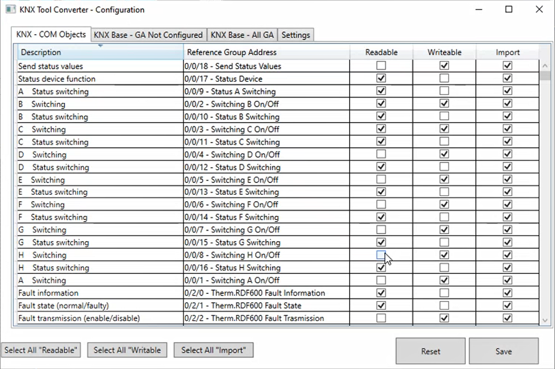

Select the KNX Objects to Import
To get the list of the KNX COM objects, configure the possibility to command more objects, and select the ones you want to import, do the following:
- Select the KNX – COM Objects tab.
- Click the Reference Group Address column to sort the list of objects accordingly, in the ascending or descending order.

- In the Readable column, select the check box that corresponds to each readable KNX COM object to be read by Desigo CC.
NOTE: To set to readable all the KNX COM objects included in the configuration file, click Select All “Readable”. - In the Writable column, select the check box that corresponds to each writable KNX COM object to be commanded by Desigo CC.
NOTE: To set to writable all the KNX COM objects included in the configuration file, click Select All “Writable”. - In the Import column, select the check box that corresponds to each KNX COM object to import into Desigo CC.
NOTE: To select all the KNX COM objects in the list for the import into Desigo CC, click Select All “Import”. - To copy the configuration of KNX COM objects, select a row and use CTRL+C and CTRL+V to copy and paste its configuration onto another KNX COM object.
- Check the Reference Group Address configuration for all the KNX COM objects.
If one or more KNX COM objects have this value highlighted in red this means that the Type.Subtype (x.xxx) is missing. For each one of those KNX COM objects do the following: - Double-click the value highlighted in red.
Then, in the KNX Base – GA Not Configured tab, which is open with that specific KNX COM object selected, specify the Type.Subtype (x.xxx) and click Save.